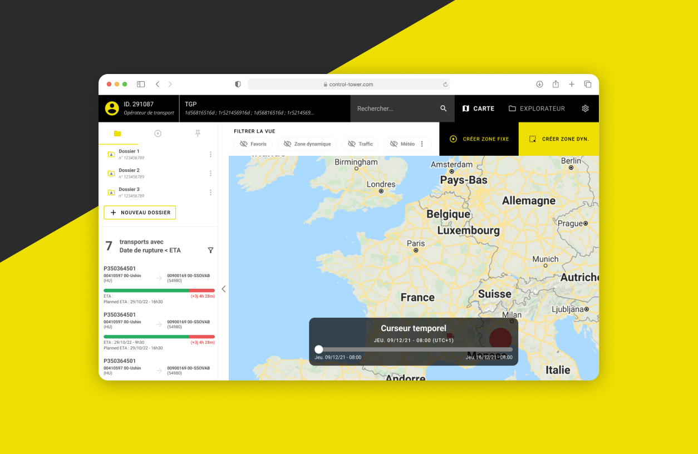
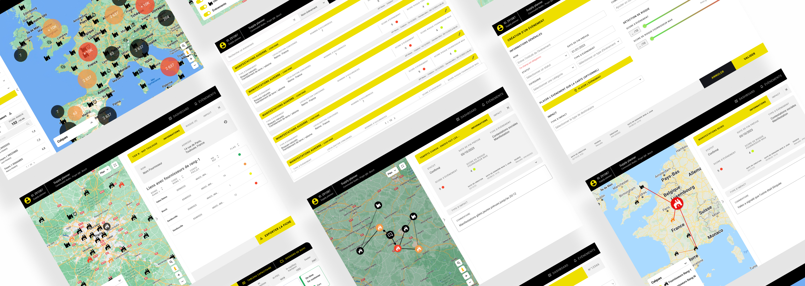
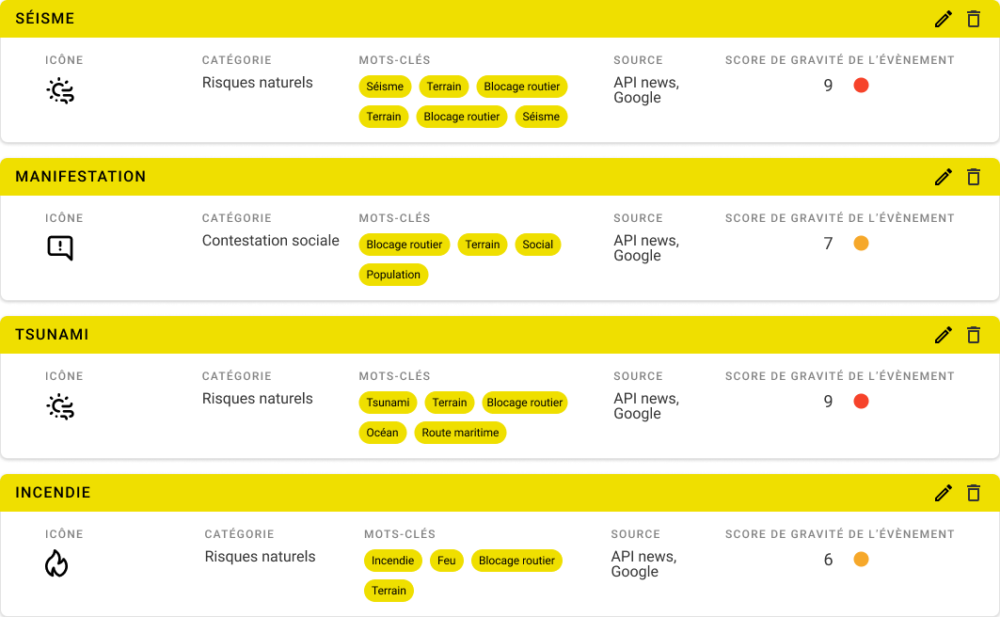

Control Tower Industrie automobile
Imaginer et créer une tour de contrôle logistique pour un constructeur automobile afin d'avoir une vision globale sur les livraisons de marchandises en temps réel.
Le projet
Un grand constructeur automobile français cherchait à digitaliser et centraliser la gestion des risques logistiques liés au transport de pièces entre ses usines à l'échelle mondiale. Face à la complexité croissante de sa chaîne d'approvisionnement, il avait besoin d'une plateforme de pilotage en temps réel, capable d'anticiper les perturbations avant qu'elles n'impactent la production.
→ une vue mondiale unique sur tous les flux de transport
→ Détecter et prioriser les alertes avant impact sur la production
→ Proposer des scénarios alternatifs avec estimation des coûts

Comprendre avant de concevoir
Avant de poser le moindre wireframe, j'ai animé des ateliers avec les équipes métier — opérateurs logistiques et responsables de fabrication. L'objectif : cartographier les usages réels, identifier les pain points et aligner tout le monde sur les priorités.
Personae
Définition des profils utilisateurs clés : l'opérateur logistique et le responsable de fabrication.
Arborescence
Atelier de tri et structuration des fonctionnalités pour définir l'architecture de l'information.
User Journey
Mapping des parcours existants pour identifier les moments critiques et les ruptures de flux.
Priorisation
Priorisation des features avec la cheffe de projet et les équipes client en réunion de cadrage.
« Au moment où l'on comprenait pourquoi une livraison de pièce était bloquée, il était déjà trop tard pour qu'elle arrive à temps en usine. » L'enjeu premier était d'informer, puis d'anticiper.
Une vue globale sur les camions en transit
Premier périmètre du projet : le transport par camion en Europe, Moyen-Orient et Afrique du Nord. L'enjeu UX central était de permettre aux opérateurs d'identifier en un coup d'œil quelles livraisons quittaient l'entrepôt et d'accéder rapidement aux données brutes.
Dashboard lot 1 (voie terrestre) → API Google map permettant de géolocaliser les camions → Informations clés regroupées (alertes, tâches par agent, visibilité des dossiers créés par l'utilisateur, capacité à pouvoir filtrer la vue sur la carte, possibilité de (re)voir la trajectoire des livraisons via le curseur temporel etc.)
Tracking de la livraison en temps réel — La plateforme permet de suivre la trajectoire d'un camion, de son point de départ jusqu'à son arrivée, on peut consulter les évènements routiers, paramétrer les alertes pour qu'un agent spécifique en charge de la livraison reçoive directement les informations, ainsi que différents scénarios de secours en cas d'incident/problème routier.
Création de dossier et suivi des livraisons spécifiques — Il est possible de créer et rechercher des dossiers spécifiques pour y trouver différentes informations, notamment un groupement spécifique de camions, les demandes traitées et non traitées liées à ce dernier, ainsi que les informations globales de celui-ci.
Boucler la vision à 360° sur la supply chain mondiale
Le maritime représente le mode de transport le plus complexe à visualiser — des temps de transit de plusieurs semaines, des ports de transit, des aléas climatiques. Ce lot a finalisé la couverture globale de la plateforme et consolidé le design system sur ses trois dimensions.
Exemple : Dashboard lot 3 (livraison par voie maritime) → API Google map permettant de géolocaliser les bateaux → Informations clés regroupées (alertes, tâches par agent, visibilité des dossiers créés par l'utilisateur, capacité à pouvoir filtrer la vue sur la carte, possibilité de (re)voir la trajectoire des livraisons via le curseur temporel etc.)
Chaque livraison peut être trackée — Depuis le lancement de cette mise à jour, il est possible de tracker les différentes livraisons faites par voie maritime, chaque bateau peut être recherché et consulté (on y trouve les trajets prévus, les évènements relatifs à l'activité maritime, les alertes et les scénarios possibles en cas de problème).
Les ports peuvent être consultés — Chaque port peut faire l'objet d'une consultation pour des renseignements concernant les bateaux qui entrent et sortent, des articles de presse locaux concernant l'activité de ce dernier, et les alertes pour qu'un ou plusieurs membres puisse(nt) être informé(s) si un problème survient.
Les scénarios — Ces derniers peuvent être utilisés en cas d'urgence ou bien lorsqu'un problème lié au terrain ou au moyen de transport survient. La plateforme propose plusieurs scénarios possibles afin de résoudre le problème, allant du changement de date de booking jusqu'à un changement de compagnie. Le coût et la date de livraison sont automatiquement calculés par la plateforme afin qu'une décision puisse être prise plus sereinement.
Les évènementsIl est possible de lier des évènements sur les différentes usines et ports afin que les agents puissent être avertis en temps réel d'éventuels problèmes et informer le personnel lié aux livraisons : risques naturels, sanitaires, cyberattaque, géopolitiques, incident ou incendie fournisseur ainsi que terrorisme.

Filtrer les recherches facilementAfin de pouvoir rechercher rapidement et efficacement un flux, un outil de recherche a été déployé avec plusieurs couches allant de la localisation jusqu'à une usine ou un fournisseur spécifique dans le monde, en passant par le modèle de véhicule ou la compagnie maritime.
Résultat
La plateforme a été déployée et utilisée par les membres du groupe automobile depuis 2023, elle fait office de tour de contrôle et a permis d'améliorer largement le processus des agents afin de garantir au mieux les délais de livraison et répondre aux imprévus, allant de soucis météorologiques jusqu'à des problèmes humains.
Un outil performant apportant plus de visibilité et fonctionnalités pour répondre aux imprévus et urgences
Les différents outils déployés permettent au personnel de mieux gérer les délais de livraisons
La fonctionnalité d'alerte permet au personnel de réagir plus rapidement pour une prise en charge rapide
Disponible pour de nouveaux projets